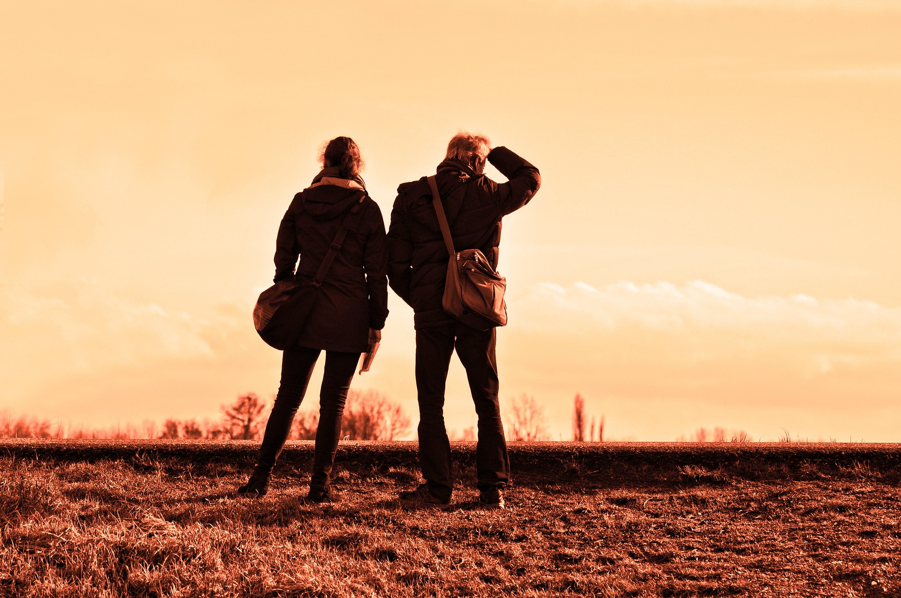
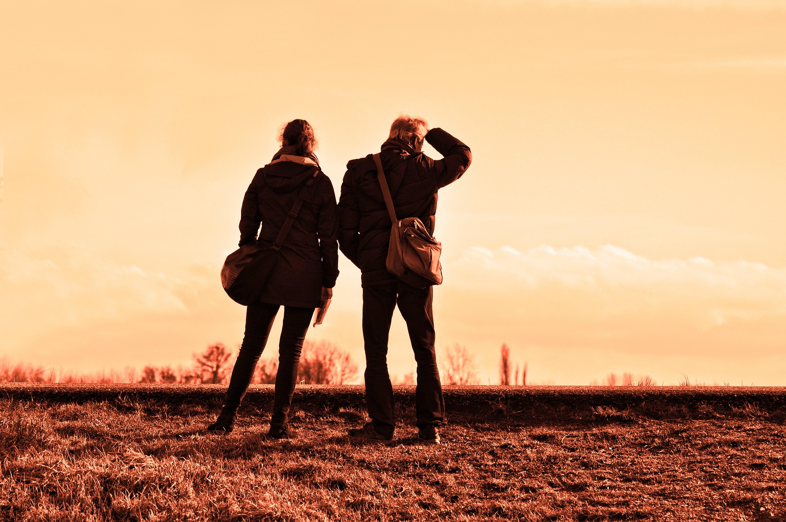

ADVENTURE
ADVENTURE TIME
Adventure Time is an American fantasy animated television series created by Pendleton Ward and co-produced by Frederator Studios for Cartoon Network. The series follows the adventures of a boy named Finn (Jeremy Shada) and his best friend and adoptive brother Jake (John DiMaggio)—a dog with the power to change size and shape at will. Finn and Jake live in the post-apocalyptic Land of Ooo, where they interact with Princess Bubblegum (Hynden Walch), the Ice King (Tom Kenny), Marceline (Olivia Olson), BMO (Niki Yang), and others. The series is based on a 2007 short film that aired on Nicktoons. After the short became a viral hit on the Internet, Nickelodeon's executives passed on its option before Cartoon Network commissioned a full-length series from Fred Seibert and Ward, which was previewed on March 11, 2010. The same year, the series premiered on Cartoon Network on April 5, and it ended its eight-year run on September 3, 2018.
Adventure Time follows the adventures of a boy named Finn the Human (voiced by Jeremy Shada), and his best friend and adoptive brother Jake the Dog (John DiMaggio), who has magical powers to change shape and size at will. Pendleton Ward, the series' creator, describes Finn as a "fiery little kid with strong morals"
BIKING
Road bikes tend to have a more upright shape and a shorter wheelbase, which make the bike more mobile but harder to ride slowly. The design, coupled with low or dropped handlebars, requires the rider to bend forward more, making use of stronger muscles (particularly the gluteus maximus) and reducing air resistance at high speed.
Road bikes tend to have a more upright shape and a shorter wheelbase, which make the bike more mobile but harder to ride slowly. The design, coupled with low or dropped handlebars, requires the rider to bend forward more, making use of stronger muscles (particularly the gluteus maximus) and reducing air resistance at high speed.
PARA GLIDING
Paragliding is the recreational and competitive adventure sport of flying paragliders: lightweight, free-flying, foot-launched glider aircraft with no rigid primary structure.[1] The pilot sits in a harness or in a cocoon-like 'pod' suspended below a fabric wing. Wing shape is maintained by the suspension lines, the pressure of air entering vents in the front of the wing, and the aerodynamic forces of the air flowing over the outside.
Despite not using an engine, paraglider flights can last many hours and cover many hundreds of kilometres, though flights of one to five hours and covering some tens of kilometres are more the norm. By skillful exploitation of sources of lift, the pilot may gain height, often climbing to altitudes of a few thousand metres.
SURFING
Surfing is a surface water sport in which an individual, a surfer (or two in tandem surfing), uses a board to ride on the forward section, or face, of a moving wave of water, which usually carries the surfer towards the shore. Waves suitable for surfing are primarily found on ocean shores, but can also be found in standing waves in the open ocean, in lakes, in rivers in the form of a tidal bore, or in wave pools.
Three major subdivisions within stand-up surfing are stand-up paddling, long boarding and short boarding with several major differences including the board design and length, the riding style and the kind of wave that is ridden.